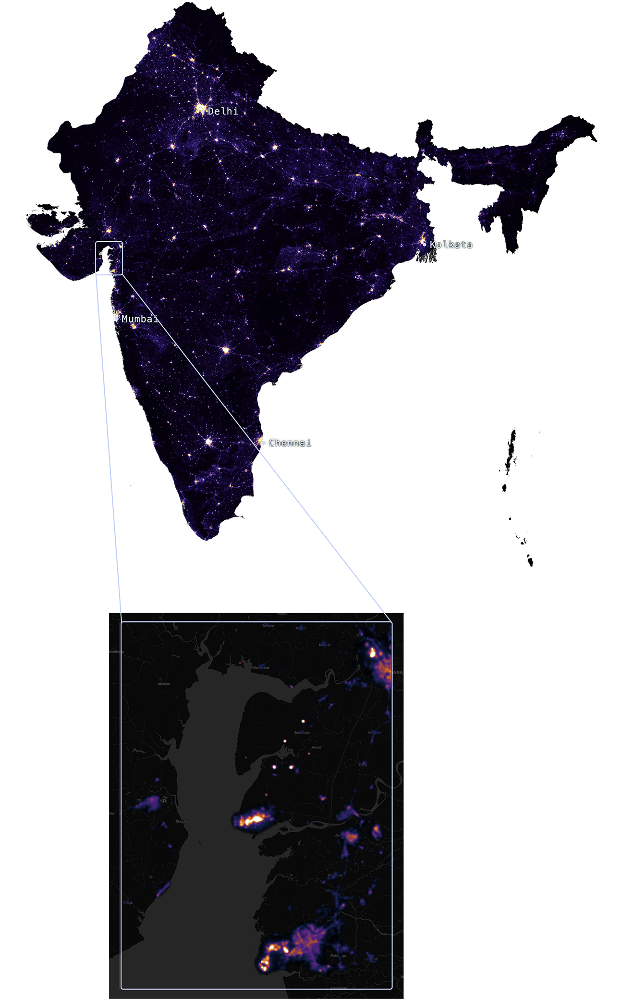

Permian Basin, Texas
Where the earth catches fire — first for oil, now for AI
2013
Out in the plains of West Texas, satellite radiance surged as the shale oil boom took hold. A decade of horizontal drilling and fracking turned quiet ranchland into one of the fastest-growing oil regions on Earth. That climb wasn't uninterrupted: in 2020, oil prices collapsed as COVID-19 crushed global demand, and rigs across the Permian went idle almost overnight, a brief but sharp dip before drilling roared back. Much of that new light traces back to gas flaring, excess natural gas burned off at the wellhead instead of captured, an economic and environmental signal energy researchers have tracked for years.
More recently, that same cheap gas has found a second use: powering AI. Chevron and Microsoft are building a 2.67-gigawatt data center running entirely on Permian gas, and OpenAI's Stargate campus draws on the same supply network. On the map, Permian Basin doesn't just grow. It visibly catches fire, first for oil, now for AI.
India
A Decade of Light
2016 → 2025
In 2016, large parts of rural India were still dark after sunset. By 2025, much of that darkness had been switched on. Government electrification schemes launched from 2014 onward brought grid power to tens of thousands of villages, and a later push connected nearly 29 million rural households that had never had electricity before. The International Energy Agency has pointed to 2018 alone as a year in which India connected close to 100 million people, a pace on par with what it would take to close all of sub-Saharan Africa's electricity gap by 2030.
Independent researchers note that the government's later declaration of "100% household electrification" leaned on some generous redefinitions, and pockets of rural India still go without reliable power. But the two satellite images, nine years apart, tell the broad story clearly: hundreds of millions of people went from candlelight and kerosene lamps to a lit home in less than a decade.
Gujarat Coastal Corridor
The Gulf of Khambhat
2016 → 2025
Hugging India's western coastline, the Gulf of Khambhat traces the physical acceleration of industrial growth. Dahej, a deep-water port built specifically for chemicals and hazardous cargo, has become India's first dedicated chemical port and now anchors one of the country's largest Petroleum, Chemicals and Petrochemicals Investment Regions, hosting major players like Reliance, ONGC, GAIL, and Adani. Nearby Hazira handles LNG and container traffic feeding Gujarat's industrial hinterland. Together with expanding Special Economic Zones along the coast, this stretch of shoreline has been quietly building itself into one of India's most concentrated industrial engines.

Kyiv
Night lights before, during and after the energy crisis
January 2014
Move through the timeline below to explore Kyiv's changing nighttime landscape.
Berlin
The changing rhythm of a growing European capital
2013
Move through the timeline below to explore Berlin's changing nighttime landscape.
Detroit, Michigan
The LED paradox — when better light looks darker from space
2014
Move through the timeline to explore Detroit's nighttime transformation.
Paris, Île-de-France
The city that chose darkness — and found the stars
2013
Move through the timeline to explore how legislation reshaped Paris at night.